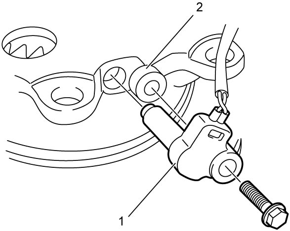
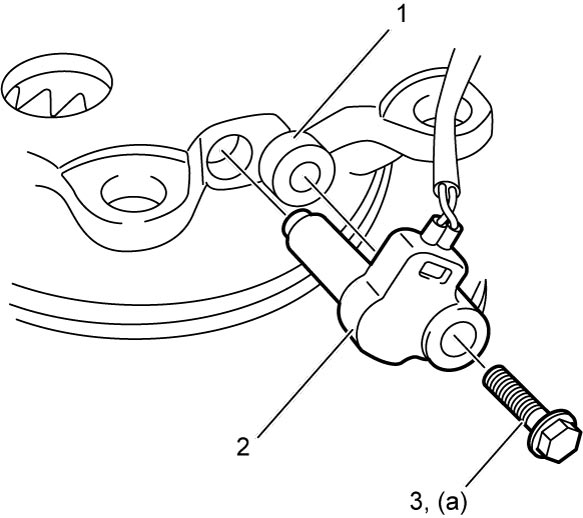

5A
| Output Shaft Speed Sensor Removal and Installation |
Removal
1)Remove counter drive gear. 
2)Remove output shaft speed sensor (1) and spacer (2).

 "Expand image")
Installation
Reverse removal procedure noting the following point.
•Install spacer (1) and output shaft speed sensor (2), and then tighten output shaft speed sensor bolt (3) to specified torque.

 "Expand image")